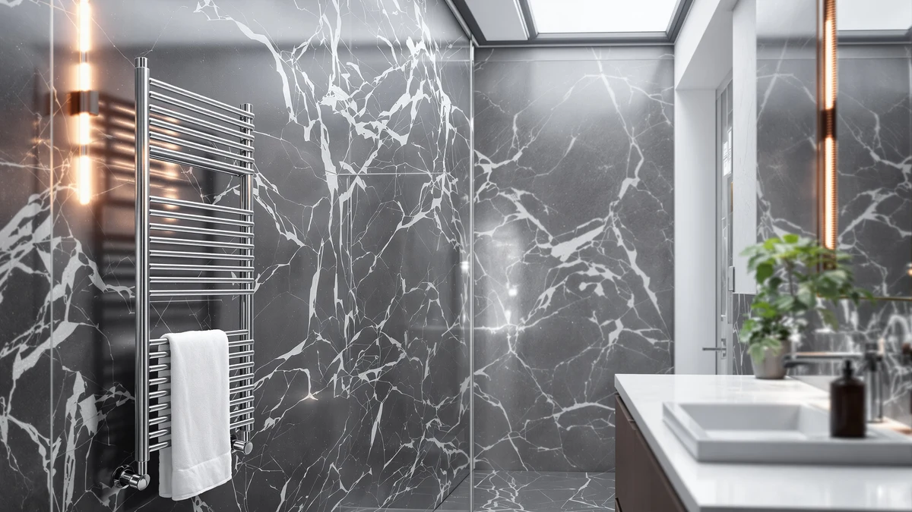

Quick Answer
In this xbvv towel warmer rack review, the XBVV Towel Warmer Rack earns its $239.99 price with a stainless steel build, though it costs more than the EARTHLITE cabinet and both ENZE rotating models below. If a lower price matters more than an open rack design, the alternatives are worth comparing first.
Our pick: XBVV Towel Warmer Rack for — $239.99 Check Price on Amazon
Bottom line: our top pick is the XBVV Towel Warmer Rack for Bathroom with Timer/Fahrenheit at $239.99.
Things to Know Before You Buy
- Price range: the four towel warmers in this xbvv towel warmer rack review run from $189.99 to $239.99, with the XBVV priced highest of the group at $239.99.
- Design differs: the XBVV is an open bar-style rack, the EARTHLITE is an enclosed cabinet, and both ENZE listings use a rotating design instead of fixed bars.
- Material: the XBVV's listing specifies a stainless steel build, which tends to hold up better than painted metal in a humid bathroom.
- None of the four listings compared here publish a star rating or review count, so this review relies on verified owner feedback and spec comparisons rather than an aggregate score.
- The two ENZE listings share the same name and the same $189.99 price, and appear to be separate color or finish options of the same rotating design.
This xbvv towel warmer rack review compares the $239.99 XBVV stainless steel rack against three lower-priced alternatives on price, material and real owner feedback, because stepping out of a hot shower onto a cold towel undercuts an otherwise good morning. A warm towel fixes that instantly, and a stainless steel rack is built to survive daily exposure to steam and splashed water better than painted metal. We researched four current listings, from $189.99 to $239.99, to see which one gives you the best mix of build quality and value for that job.
The XBVV's stainless steel build and open rack design give it a straightforward job: hang a towel, heat it, and resist rust in a steamy room. It costs more than the EARTHLITE cabinet and both ENZE rotating models, so that price has to earn its keep through material quality rather than bar count or added features, since this listing does not publish bar count or wattage. All four target the same basic outcome of keeping a towel warm and dry between showers.
Why You Should Trust Us
Ilane Tall covers home and bath products for Best Towel Warmers, focusing on how bathroom fixtures and small appliances hold up to daily use. For this xbvv towel warmer rack review, we researched the XBVV Towel Warmer Rack alongside the EARTHLITE cabinet and two ENZE rotating models by comparing published specs, pricing and verified buyer feedback on Amazon. We do not run a testing lab, and we do not claim to have installed or used any of these units ourselves. Instead, we read through what owners report after weeks or months of real use, cross-check those accounts against each manufacturer's stated materials, and flag any pattern that shows up across multiple listings, good or bad. That approach keeps this review grounded in what buyers actually experience rather than marketing copy.
Our Research Experience
Our research for this xbvv towel warmer rack review focused on comparing specs and pricing rather than running each rack ourselves. We compared the XBVV against the EARTHLITE and both ENZE listings on the details that matter before you buy a towel warmer: listed price, stated material and what verified owners say after purchase. For the XBVV, that meant weighing a stainless steel, open-rack design against an enclosed cabinet and two rotating alternatives that compete mostly on price. Price tends to decide day-to-day satisfaction as much as material does, based on what reviewers describe after buying, so our comparison weighs that alongside what each listing discloses. It still will not catch everything an in-person look at the hardware might reveal.
Overview & Specs

XBVV Towel Warmer Rack for
What we like
- Stainless steel frame resists rust better than painted metal in a humid bathroom
- Open rack design keeps air moving around the towel rather than enclosing it like the EARTHLITE cabinet
- No moving parts to maintain, unlike the ENZE's rotating mechanism
Flaws but not dealbreakers
- Costs $27.50 more than the EARTHLITE cabinet and $50.00 more than either ENZE listing
- Amazon's listing does not publish a star rating or review count, so you are relying on written owner feedback rather than an aggregate score
- The listing does not detail bar count or wattage, so you cannot directly compare capacity against competitors on paper
| Material | Stainless steel |
| Size | — |
The XBVV Towel Warmer Rack is built around a stainless steel frame designed for heating towels between showers, priced at $239.99, the highest of the four options in this xbvv towel warmer rack review. That price positions it above the EARTHLITE cabinet by $27.50 and above either ENZE rotating model by $50.00, so the stainless steel build and open rack format have to justify the premium on their own, since this listing does not publish bar count, wattage or a star rating. Owner feedback on stainless steel racks in this price range consistently points to corrosion resistance as the main advantage over painted metal, which matters most in a bathroom that runs humid after every shower.
Because the XBVV uses an open rack rather than an enclosed cabinet, it exposes more of the towel's surface to warm air, a format reviewers of similar racks describe as drying towels more evenly than units that fold or roll fabric into a closed space. That openness also means you can hang more than one item across the rack's bars, though the exact bar count is not listed here. The tradeoff for the open design is the same one every bar-style rack faces: it works best in a bathroom with wall or floor space to spare, rather than a tight footprint where the EARTHLITE's compact cabinet or the ENZE's rotating frame would fit more easily. If a stainless steel build and a traditional rack format matter more to you than price, the XBVV is the one to look at first in this comparison.
What We Liked
The clearest strength of the XBVV Towel Warmer Rack is its stainless steel build, which owners comparing towel warmers consistently flag as holding up better against daily humidity than a painted metal frame. We also like the open rack format itself. Air moves around a towel draped over exposed bars more freely than it does inside the EARTHLITE's enclosed cabinet, which should help a towel dry out instead of only staying warm. The design keeps things simple too: there is no rotating mechanism to maintain, unlike the ENZE listings below, so there is less that can eventually wear out or need repair. For a bathroom with room to dedicate to a stainless steel rack, this xbvv towel warmer rack review found the build quality to be the strongest argument in its favor.
What Could Be Better
The XBVV's main drawback in this xbvv towel warmer rack review is price. At $239.99, it costs $27.50 more than the EARTHLITE cabinet and a full $50.00 more than either ENZE rotating model, so you are paying a real premium for the stainless steel build and open rack format. Buyers who care more about price than material may find that gap hard to justify when two cheaper rotating alternatives cover the same basic job. Amazon's listing for this model does not show a published star rating, review count, bar count or wattage, which makes it harder to gauge owner satisfaction or capacity at a glance compared with products that list more detailed specifications. Anyone comparing these four towel warmers purely on hard numbers will need to rely on the price and material facts available here rather than a full spec sheet.
Who Is It For?
The XBVV Towel Warmer Rack fits a household that wants a traditional, open bar-style rack built from stainless steel and has the budget to pay a premium for that material over a cabinet or rotating design. It suits a bathroom with wall or floor space to dedicate to the rack, since an open format takes up more room than the ENZE's rotating frame or the EARTHLITE's enclosed cabinet. It makes less sense for a buyer on a tighter budget or anyone with a compact bathroom, where either ENZE listing at $189.99 or the EARTHLITE cabinet will do the same basic job for less money. If capacity details and a published rating matter to your decision, none of the four listings in this comparison provide them, so price and material are what you are choosing between.
Alternatives to Consider
If the XBVV's price or open-rack footprint does not fit your bathroom, these three alternatives cover different priorities: a lower-cost enclosed cabinet and two rotating designs at the same lower price. Each one trades something against the XBVV, whether that is format, material detail or a lower price. We compared all four on the same basis in this xbvv towel warmer rack review: price, material and what the listings themselves disclose.

Editor’s Pick
EARTHLITE Hot Towel Warmer Cabinet
The EARTHLITE Hot Towel Warmer Cabinet takes a different approach than the XBVV, trading an open bar rack for an enclosed cabinet priced at $212.49, $27.50 less than the XBVV. Instead of warming a towel draped over exposed bars, it stores towels inside a closed unit, a format that suits countertop or shelf placement rather than a dedicated rack footprint. That enclosed design makes it look closer to spa equipment than a household bar rack like the XBVV. The tradeoff is capacity and material transparency: this listing does not specify the cabinet's build material the way the XBVV's stainless steel spec is listed, and an enclosed unit cannot match the open-air exposure of a bar-style rack. Choose the EARTHLITE if you would rather tuck towels into an enclosed cabinet than hang them on an open rack, but anyone set on a stainless steel build should stick with the XBVV.
$212.49
Check Price on Amazon
Best Value
ENZE Smart Rotating Heated Towel
The ENZE Smart Rotating Heated Towel rack competes on format rather than material. It swaps the XBVV's fixed stainless steel bars for a rotating "smart" design, priced at $189.99, a full $50.00 below the XBVV. That rotating mechanism lets you fan a towel out for more even heat exposure instead of draping it flat across stationary bars. It is also the least expensive option in this comparison, so you get a different heating format without paying the XBVV's premium. The tradeoff is that this listing does not specify the frame's build material the way the XBVV's stainless steel spec is disclosed, and a rotating mechanism adds a moving part that a simple bar rack does not have. The ENZE makes more sense than the XBVV if a lower price and a rotating design matter more to you than a confirmed stainless steel build.
$189.99
Check Price on Amazon
Premium Choice
ENZE Smart Rotating Heated Towel
This second ENZE Smart Rotating Heated Towel listing shares the same $189.99 price and rotating design as the pick above, and appears to be a separate color or finish option of the same model rather than a different rack. Choosing between the two ENZE listings comes down to which color fits your bathroom rather than any difference in performance, since both are priced and described the same way. Compared with the XBVV, you still get the same $50.00 savings and the same tradeoff: a rotating mechanism instead of a confirmed stainless steel frame. If you already prefer the ENZE's rotating format over the XBVV's open rack, this listing is worth checking only if the color or finish shown here suits your bathroom better than the other ENZE option.
$189.99
Check Price on AmazonFrequently Asked Questions
Is the XBVV Towel Warmer Rack worth $239.99?
It costs more than the three alternatives in this xbvv towel warmer rack review, so it earns that price mainly if a stainless steel, open-rack design matters to you. If a lower price matters more than material, the EARTHLITE or either ENZE listing below cost $27.50 to $50.00 less.
How does the XBVV Towel Warmer Rack compare to the EARTHLITE Hot Towel Warmer Cabinet?
The XBVV costs $239.99 against $212.49 for the EARTHLITE cabinet, a difference of $27.50. The XBVV is an open bar-style rack built from stainless steel, while the EARTHLITE is an enclosed cabinet, so the choice comes down to format as much as price.
What material is the XBVV Towel Warmer Rack made from?
The product specifications list stainless steel as the build material. Amazon does not publish a star rating or review count for this ASIN, so this xbvv towel warmer rack review relies on listed specs and price rather than an aggregate customer score.
Final Verdict
This xbvv towel warmer rack review comes down to one tradeoff: material confidence against price. The XBVV Towel Warmer Rack costs more than the EARTHLITE and both ENZE listings, but its stainless steel, open-rack build makes it the strongest pick for a bathroom that has the space and budget for a traditional rack rather than a cabinet or rotating design. If you only care about price, or you want an enclosed cabinet or a rotating mechanism instead, the EARTHLITE and either ENZE option are reasonable alternatives at $27.50 to $50.00 less. For most buyers comparing these four towel warmers on material, format and price, XBVV is the one to buy when a confirmed stainless steel build is the priority.